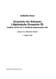

Aktuelle Vorlesungen
(Zur Zeit keine.)
Abgeschlossene Vorlesungen
Analysis I✎ Edit
PDFDr. C. Schmoeger | Wintersemester 04/05
More
Inhaltsverzeichnis / kapitelweises bearbeiten
- Preamble ✎ Edit
- Vorwort ✎ Edit
- Eingeführte Begriffe ✎ Edit
- Reelle Zahlen ✎ Edit
- Natürliche Zahlen ✎ Edit
- Folgen, Abzählbarkeit ✎ Edit
- Wie Sie Wollen ✎ Edit
- Wurzeln und rationale Exponenten ✎ Edit
- Konvergente Folgen ✎ Edit
- Wichtige Beispiele ✎ Edit
- Häufungswerte und Teilfolgen ✎ Edit
- Oberer und unterer Limes ✎ Edit
- Das Cauchy-Kriterium ✎ Edit
- Unendliche Reihen ✎ Edit
- Konvergenzkriterien ✎ Edit
- Umordnungen und Produkte von Reihen ✎ Edit
- Potenzreihen ✎ Edit
- $g$-adische Entwicklungen ✎ Edit
- Grenzwerte bei Funktionen ✎ Edit
- Stetigkeit ✎ Edit
- Eigenschaften stetiger Funktionen ✎ Edit
- Funktionsfolgen und -reihen ✎ Edit
- Gleichmäßige Stetigkeit ✎ Edit
- Differenzierbarkeit ✎ Edit
- Höhere Ableitungen ✎ Edit
- Das Riemann-Integral ✎ Edit
- Uneigentliche Integrale ✎ Edit
- Funktionen von beschränkter Variation ✎ Edit
- Das Riemann-Stieltjes-Integral ✎ Edit
- Satz um Satz (hüpft der Has) ✎ Edit
- Credits für Analyis I ✎ Edit
Analysis II✎ Edit
PDFDr. C. Schmoeger | Sommersemester 2005
More
Inhaltsverzeichnis / kapitelweises bearbeiten
- Preamble ✎ Edit
- Vorwort ✎ Edit
- Der Raum $\MdR^n$ ✎ Edit
- Konvergenz im $\MdR^n$ ✎ Edit
- Grenzwerte bei Funktionen, Stetigkeit ✎ Edit
- Partielle Ableitungen ✎ Edit
- Differentiation ✎ Edit
- Differenzierbarkeitseigenschaften reellwertiger Funktionen ✎ Edit
- Quadratische Formen ✎ Edit
- Extremwerte ✎ Edit
- Der Umkehrsatz ✎ Edit
- Implizit definierte Funktionen ✎ Edit
- Extremwerte unter Nebenbedingungen ✎ Edit
- Wege im $\MdR^n$ ✎ Edit
- Wegintegrale ✎ Edit
- Stammfunktionen ✎ Edit
- Integration von Treppenfunktionen ✎ Edit
- Das Lebesguesche Integral ✎ Edit
- Quadrierbare Mengen ✎ Edit
- Konvergenzsätze ✎ Edit
- Messbare Mengen und messbare Funktionen ✎ Edit
- Satz von Fubini / Substitutionsregel ✎ Edit
- Parameterabhängige Integrale ✎ Edit
- Satz um Satz (hüpft der Has) ✎ Edit
- Credits für Analysis II ✎ Edit
Analysis II - Bachelorversion✎ Edit
PDFDr. C. Schmoeger | Sommersemester 2010
More
Inhaltsverzeichnis / kapitelweises bearbeiten
- Preamble ✎ Edit
- Vorwort ✎ Edit
- Der Raum $\MdR^n$ ✎ Edit
- Konvergenz im $\MdR^n$ ✎ Edit
- Grenzwerte bei Funktionen, Stetigkeit ✎ Edit
- Partielle Ableitungen ✎ Edit
- Differentiation ✎ Edit
- Differenzierbarkeitseigenschaften reellwertiger Funktionen ✎ Edit
- Quadratische Formen ✎ Edit
- Extremwerte ✎ Edit
- Der Umkehrsatz ✎ Edit
- Implizit definierte Funktionen ✎ Edit
- Extremwerte unter Nebenbedingungen ✎ Edit
- Wege im $\MdR^n$ ✎ Edit
- Wegintegrale ✎ Edit
- Stammfunktionen ✎ Edit
- Vorgriff auf Analysis III ✎ Edit
- Folgen, Reihen und Potenzreihen in $\MdC$ ✎ Edit
- Normierte Räume, Banachräume, Fixpunktsatz ✎ Edit
- Differentialgleichungen: Grundbegriffe ✎ Edit
- Lineare Differentialgleichungen 1. Ordnung ✎ Edit
- Differentialgleichungen mit getrennten Veränderlichen ✎ Edit
- Systeme von Differentialgleichungen 1. Ordnung ✎ Edit
- Lineare Systeme ✎ Edit
- Homogene lineare Systeme mit konstanten Koeffizienten ✎ Edit
- Lineare Differentialgleichungen n-ter Ordnung ✎ Edit
- Lineare Differentialgleichungen n-ter Ordnung mit konstanten Koeffizienten ✎ Edit
- Satz um Satz (hüpft der Has) ✎ Edit
- Credits für Analysis II ✎ Edit
Analysis III✎ Edit
PDFDr. C. Schmoeger | Wintersemester 05/06
More
Inhaltsverzeichnis / kapitelweises bearbeiten
- Preamble ✎ Edit
- Vorwort ✎ Edit
- Vorbereitung ✎ Edit
- Satz von Arzelà-Ascoli ✎ Edit
- Der Integralsatz von Gauss im $\MdR^2$ ✎ Edit
- Flächen im $\MdR^3$ ✎ Edit
- Der Integralsatz von Stokes ✎ Edit
- Der Integralsatz von Stokes ✎ Edit
- Differentialgleichungen: Grundbegriffe ✎ Edit
- Lineare Differentialgleichungen 1. Ordnung ✎ Edit
- Differentialgleichungen mit getrennten Veränderlichen ✎ Edit
- Einige Typen von Differentialgleichungen 1. Ordnung ✎ Edit
- Exakte Differentialgleichungen ✎ Edit
- Hilfsmittel aus der Funktionalanalysis ✎ Edit
- Der Existenzsatz von Peano ✎ Edit
- Der Existenz- und Eindeutigkeitssatz von Picard - Lindelöf ✎ Edit
- Matrizenwertige und vektorwertige Funktionen ✎ Edit
- Existenz- und Eindeutigkeitssätze für Dgl.Systeme 1. Ordnung ✎ Edit
- Lineare Systeme ✎ Edit
- Lineare Systeme mit konstanten Koeffizienten ✎ Edit
- Differentialgleichungen höherer Ordnung ✎ Edit
- Lineare Differentialgleichungen $m$-ter Ordnung ✎ Edit
- Lineare Differentialgleichungen $m$-ter Ordnung mit konstanten Koeffizienten ✎ Edit
- Die Eulersche Differentialgleichung ✎ Edit
- Einschub: Das Zornsche Lemma ✎ Edit
- Nicht fortsetzbare L"osungen ✎ Edit
- Minimal- und Maximallösung ✎ Edit
- Ober- und Unterfunktionen ✎ Edit
- Stetige Abhängigkeit ✎ Edit
- Zwei Eindeutigkeitssätze ✎ Edit
- Randwertprobleme (Einblick) ✎ Edit
- Satz um Satz (hüpft der Has) ✎ Edit
- Credits für Analysis III ✎ Edit
Analysis III - Bachelorversion✎ Edit
PDFDr. C. Schmoeger | Wintersemeseter 10/11
More
Inhaltsverzeichnis / kapitelweises bearbeiten
- Preamble ✎ Edit
- Vorwort ✎ Edit
- Vorbereitungen ✎ Edit
- $\sigma$-Algebren und Maße ✎ Edit
- Das Lebesguema\ss ✎ Edit
- Messbare Funktionen ✎ Edit
- Konstruktion des Lebesgueintegrals ✎ Edit
- Nullmengen ✎ Edit
- Der Konvergenzsatz von Lebesgue ✎ Edit
- Parameterintegrale ✎ Edit
- Vorbereitungen auf das, was kommen mag ✎ Edit
- Das Prinzip von Cavalieri ✎ Edit
- Der Satz von Fubini ✎ Edit
- Der Transformationssatz (Substitutionsregel) ✎ Edit
- Vorbereitungen für die Integralsätze ✎ Edit
- Der Integralsatz von Gauß im $\MdR^2$ ✎ Edit
- Flächen im $\MdR^3$ ✎ Edit
- Integralsatz von Stokes ✎ Edit
- $\fl^{p ✎ Edit
- Das Integral im Komplexen ✎ Edit
- Fourierreihen ✎ Edit
- Satz um Satz (hüpft der Has) ✎ Edit
- Credits für Analysis III ✎ Edit
Elementare Zahlentheorie✎ Edit
PDFProf. Rehm | Sommersemester 2006
More
Inhaltsverzeichnis / kapitelweises bearbeiten
- Preamble ✎ Edit
- ✎ Edit
- Primzerlegung ✎ Edit
- Arithmetische Funktionen ✎ Edit
- Kongruenzen und Restklassenringe ✎ Edit
- Endliche Körper und der Satz von Chevalley ✎ Edit
- Quadratische Kongruenzen ✎ Edit
- Primzahltests ✎ Edit
- Ganzzahlige lineare Gleichungen und Moduln über euklidischen Ringen ✎ Edit
- Ganzzahlige quadratische Formen ✎ Edit
Funktionentheorie I✎ Edit
PDF")
Dr. C. Schmoeger | Sommersemester 2006
More
Inhaltsverzeichnis / kapitelweises bearbeiten
- Preamble ✎ Edit
- Vorwort ✎ Edit
- Komplexe Zahlen ✎ Edit
- Topologische Begriffe ✎ Edit
- Stetigkeit, Zusammenhang, Gebiete ✎ Edit
- Komplexe Differenzierbarkeit, Holomorphie ✎ Edit
- Potenzreihen ✎ Edit
- Exponentialfunktion und trigonometrische Funktionen ✎ Edit
- Der komplexe Logarithmus ✎ Edit
- Komplexe Wegintegrale ✎ Edit
- Cauchyscher Integralsatz und Cauchysche Integralformeln ✎ Edit
- Folgerungen aus den Integralformeln ✎ Edit
- Weitere Eigenschaften holomorpher Funktionen ✎ Edit
- Das Schwarzsche Lemma ✎ Edit
- Isolierte Singularitäten ✎ Edit
- Laurententwicklung ✎ Edit
- meromorphe Funktionen, Moebiustransformationen ✎ Edit
- Die Umlaufzahl ✎ Edit
- Der Residuensatz und Folgerungen ✎ Edit
- Der Satz von Montel ✎ Edit
- Der Riemannsche Abbildungssatz ✎ Edit
- Homotopie und einfacher Zusammenhang ✎ Edit
- Cauchyscher Integralsatz (Homotopieversionen) ✎ Edit
- Cauchyscher Integralsatz (Homologieversionen) ✎ Edit
- Satz um Satz (hüpft der Has) ✎ Edit
Geometrie der Schemata - (Algebraische Geometrie II)✎ Edit
PDFProf. Dr. F. Herrlich | Sommersemester 2012
More
Lineare Algebra II✎ Edit
PDFProf. Dr. Schmidt | Sommersemester 2010
More
Inhaltsverzeichnis / kapitelweises bearbeiten
- Preamble ✎ Edit
- Vorwort ✎ Edit
- Normalformen von Endomorphismen ✎ Edit
- Multilineare Abbildungen und Tensorprodukte ✎ Edit
- Metriken, Normen und Skalarprodukte ✎ Edit
- Orthogonalsysteme ✎ Edit
- Normale Endomorphismen ✎ Edit
- Isometrien ✎ Edit
- Affine Räume ✎ Edit
- Affine Koordinaten und affine Abbildungen ✎ Edit
- Euklidische Punkträume ✎ Edit
- Analytische Geometrie ✎ Edit
- Projektive Geometrie ✎ Edit
Riemann’sche Geometrie✎ Edit
PDFProf. Dr. E. Leuzinger | Sommersemester 2007
More
Inhaltsverzeichnis / kapitelweises bearbeiten
- Preamble ✎ Edit
- Vorwort ✎ Edit
- Mannigfaltigkeiten ✎ Edit
- Riemann’sche Metriken ✎ Edit
- Affine Zusammenhänge und Parallelverschiebung ✎ Edit
- Geodätische Linien ✎ Edit
- Krümmung ✎ Edit
- Jacobi-Felder (Verbindung Geometrie--Krümmung) ✎ Edit
- Riemann’sche Mannigfaltigkeiten als metrische Räume ✎ Edit
- Satz um Satz (hüpft der Has) ✎ Edit
")
Stochastik I✎ Edit
PDF")
Prof. Dr. Bäuerle | Wintersemester 05/06
More
Inhaltsverzeichnis / kapitelweises bearbeiten
- Preamble ✎ Edit
- Ereignisse und Wahrscheinlichkeiten ✎ Edit
- Kombinatorik und Urnenmodelle ✎ Edit
- Bedingte Wahrscheinlichkeiten und Unabh"angigkeiten ✎ Edit
- Allgemeine Wahrscheinlichkeitsr"aume ✎ Edit
- Zufallsvariable, Verteilung, Verteilungsfunktion ✎ Edit
- Einige Verteilungen ✎ Edit
- Erwartungswert und Varianz von Zufallsvariablen ✎ Edit
- Zufallsvektoren ✎ Edit
- Unabh"angige Zufallsvariablen ✎ Edit
- Erzeugende Funktionen ✎ Edit
- Konvergenzbegriffe f"ur Zufallsvariablen ✎ Edit
- Charakteristische Funktionen ✎ Edit
- Grenzwerts"atze ✎ Edit
- Parametersch"atzung ✎ Edit
- Konfidenzintervalle ✎ Edit
- Testtheorie ✎ Edit
- Randomisierte Tests und das Lemma von Neyman-Pearson ✎ Edit
- Likelihood-Quotienten Test ✎ Edit
Stochastik II✎ Edit
PDFProf. Dr. Bäuerle | Wintersemester 06/07
More
Inhaltsverzeichnis / kapitelweises bearbeiten
- Preamble ✎ Edit
- Maß-Integral und Erwartungswert ✎ Edit
- Eigenschaften des Maß-Integrals ✎ Edit
- Produktmaße und Unabhängigkeit ✎ Edit
- Das starke Gesetz der gro"sen Zahlen ✎ Edit
- Zentraler Grenzwertsatz von Lindeberg-L\'evy ✎ Edit
- Zentraler Grenzwertsatz in $\R^n$ ✎ Edit
- Bedingte Erwartungswerte und Bedingte Verteilungen ✎ Edit
- Martingale und Stoppzeiten ✎ Edit
- Konvergenzs"atze f"ur Martingale ✎ Edit
Übungen
Sowie einzelne TopologieUebungen (Kühnlein, Wintersemesters 07/08)
Klausurzettel und Stoffzusammenfassungen
")
Zusammenfassung des Stoffes zur Vorlesung Algorithmentechnik✎ Edit
PDFProf. Dr. D. Wagner | Winteresemester 08/09
More
Zusammenfassung des Stoffes zur Vorlesung Formale Systeme✎ Edit
PDFProf. Dr. Bernhard Beckert | Winteresemester 08/09
More
Unvollständiges und unsortiertes
- Einzelne Kapitel der Funktionalanalysis im Wintersemester 06/07
- AlgUebung1
Nicht ganz ernstes
(Die parodischen Lieder sind nach http://www.joachim-breitner.de/content#parodie umgezogen...)